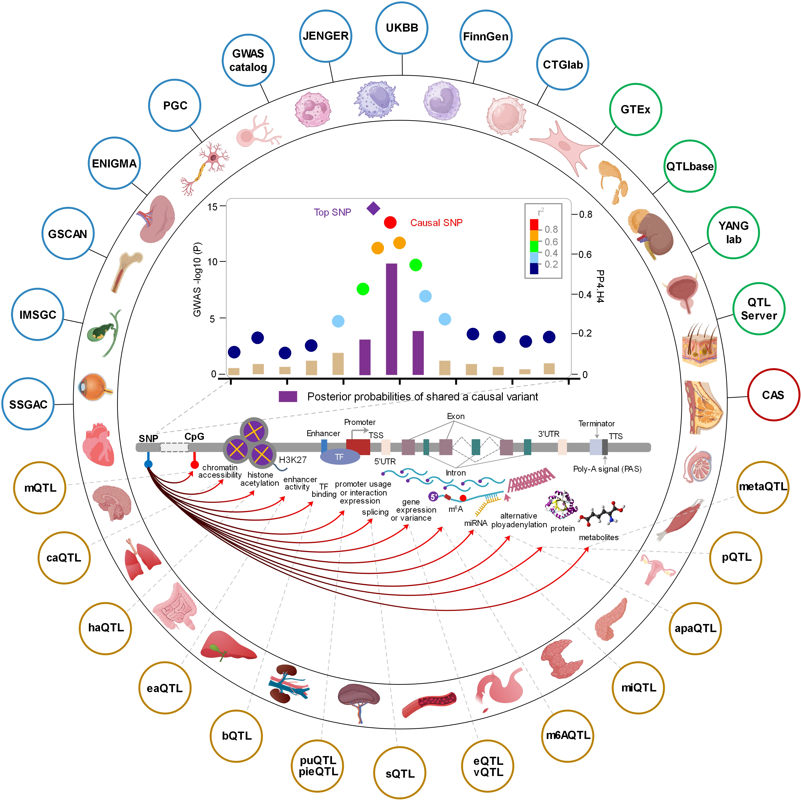

Colocalisation:From Association Signals to Shared Causal Variants
Today I will give a practical introduction to COLOC. The target
audience is a genetics audience that already knows GWAS and QTL
studies, but is not yet comfortable with the logic and workflow of
colocalisation. The seminar has four parts. First, what biological
question COLOC is actually trying to answer. Second, the standard
COLOC.abf workflow and how to interpret the output. Third, why
priors and sensitivity analysis matter. Fourth, what changes when a
locus contains multiple signals, including coloc.susie and the newer
variant-specific priors in COLOC version 6. My goal is not to turn
everyone into package developers in 45 minutes. My goal is that
after this session, you can read a COLOC paper without mystical fog
and you can start a reasonable analysis pipeline.
Outline
Part 1: Background - Why we need colocalisation?
Part 2: COLOC workflow
Part 3: coloc.susie - When one signal per trait is not enough
Part 4: Variant-specific priors - Next steps for colocalisation
This is the roadmap for the seminar. I will refer back to this slide
at the start of each section. The four parts are meant to build
logically on each other, but they can also be consumed separately.
If you are already comfortable with the original COLOC workflow, you
could skip directly to part 3 or part 4. But I recommend going
through everything at least once because the later sections build on
the earlier ones.
Part 1: BACKGROUNDColocalisation ?
I want to begin with the biological motivation before the software.
Post-GWAS interpretation often starts with a familiar temptation: a
disease signal and an eQTL signal are near each other, so perhaps
the gene is causal. That is a useful intuition, but it is not
enough. Nearby peaks can reflect a shared variant, different
variants in LD, or a more complex multi-signal locus. COLOC exists
because the phrase “these two peaks overlap” is far less informative
than it sounds. The next few slides build that distinction
carefully.
Do these two traits share a causal variant in this region?
This is the core question. It is not about lead SNPs or visual
similarity. It is about whether the data support shared causality in
the region. That is what COLOC tests. If we can keep that question
front and center, we will be in good shape to understand why the
method works and how to interpret it. [Sources] - Giambartolomei et
al. 2014. - Official COLOC intro tutorial.
What colocalisation asks?
Are both traits associated in this region?
If yes, are they more consistent with
one shared causal variant than with
two distinct variants ?
How strong is that support after accounting for uncertainty?
This is the conceptual hinge of the entire talk. Coloc is not a
fancy way to compare lead SNPs. It asks whether the regional
association patterns are more consistent with shared causation or
distinct causation. That distinction matters because LD can make
nearby variants look similar. In practice, the dangerous mistake is
to jump from “nearby” to “mechanistically linked.” Coloc gives us a
Bayesian framework to compare those explanations explicitly. For a
genetics audience, this is worth stating plainly: colocalisation is
about the relationship between causal architecture across traits,
not about the proximity of top markers. [Sources] - Giambartolomei
et al. 2014. - Official COLOC intro tutorial. - Official FAQ.
Why not just look at lead SNPs or
fine-mapping results?
Lead SNPs can differ across traits due to LD and noise.
Nearby peaks can reflect shared or distinct causal variants.
Fine-mapping methods like SuSiE may not powerful enough to find
the exact shared SNP.
This slide is a direct response to the common temptation to equate
nearby peaks with shared causality. The problem is that LD can make
different causal variants look similar, and noise can make the lead
SNPs differ even when the causal variant is shared. Coloc provides a
principled way to test these explanations against each other. If we
skip that step and just look at lead SNPs, we are vulnerable to
misinterpretation and false positives. [Sources] - Giambartolomei et
al. 2014. - Official COLOC intro tutorial. - Official FAQ.
Where we can use colocalisation?

This slide is meant to expand the audience's view of where
colocalisation can be applied. It is not limited to GWAS-eQTL
comparisons. We can also compare two GWAS, or an xQTL with another
xQTL. The key is that we have two traits and a shared genomic
region, and we want to test for shared causality. This flexibility
is one of the strengths of the COLOC framework. [Sources] - Official
COLOC intro tutorial. - Official FAQ.
Part 2: COLOC workflow
Now we move from the biological question to the standard baseline
workflow. If your audience remembers only one operational pipeline
from today, this should be it. We start with the original 2014 model
and then build upward. [Sources] - Giambartolomei et al. 2014. -
Official COLOC enumeration tutorial.
The original COLOC (2014) model
Assumption:
at most one causal variant per trait in the region
H0 : 1❌ 2❌.H1 : 1 ✅ 2❌.H2 : 1 ❌ 2 ✅.
H3 : 1 ✅ 2 ✅,
different signals.
H4 : 1 ✅ 2 ✅, shared
signals.
Main output: posterior probabilities (PP) for H0 to H4,
especially
PP.H4 .
This is the classical COLOC picture. The single-causal-variant
assumption is what makes the original framework elegant and fast. It
also explains why the results are so easy to communicate. We get
five mutually exclusive hypotheses, and the one everyone stares at
is H4. But it is crucial to remember the assumption underneath this
convenience. If the region really contains multiple signals for one
or both traits, then the original model can compress a messy locus
into a deceptively tidy answer. That problem will come back later
when we discuss SuSiE.
COLOC: A Real Data Example
What data does COLOC need?
Requirement
Two traits , one
genomic region .
Common set of dense SNPs in both studies.
Case-control or Quantitative trait.
Recommended inputs: beta + varbeta.
Common mistakes
Not aligning the directions of effect.
Using a whole chromosome or genome.
Merging several genes into one eQTL dataset.
Using only the lead SNPs.
This slide is more important than many people expect. A large
fraction of bad COLOC analyses fail before the function is even
called. The official tutorials emphasize that COLOC expects one
trait in one reasonably bounded region, with dense SNP coverage and
a common SNP set across the two datasets. Do not prune away the
local structure you are trying to compare. If you remove most SNPs
and keep only top hits, COLOC loses the pattern information that
makes the method work. This point sounds mundane, but it is where
many pipelines quietly sabotage themselves. [Sources] - Official
COLOC data tutorial. - Official FAQ. - Official COLOC.abf reference.
COLOC model
Posterior probability of H4:
$$
\begin{aligned}
\text{PPH4} & =P\left(H_4 \mid D\right) \\
& =\frac{P\left(H_4 \mid D\right)}{P\left(H_0 \mid D\right)+P\left(H_1 \mid D\right)+P\left(H_2 \mid D\right)+P\left(H_3 \mid D\right)+P\left(H_4 \mid D\right)} \\
& =\frac{\frac{P\left(H_4 \mid D\right)}{P\left(H_0 \mid D\right)}}{1+\frac{P\left(H_1 \mid D\right)}{P\left(H_0 \mid D\right)}+\frac{P\left(H_2 \mid D\right)}{P\left(H_0 \mid D\right)}+\frac{P\left(H_3 \mid D\right)}{P\left(H_0 \mid D\right)}+\frac{P\left(H_4 \mid D\right)}{P\left(H_0 \mid D\right)}}
\end{aligned}
$$
Bayes factor ratio:
$$
\frac{P(H_h \mid D)}{P(H_0 \mid D)} = \sum_{S \in S_h} \underbrace{\frac{P(D \mid S)}{P(D \mid S_0)}}_{\color{red}{\text{Bayes Factor (BF)}}} \times \underbrace{\frac{P(S)}{P(S_0)}}_{\color{red}{\text{Prior odds}}}
$$
Calculation of ABF
For the $j^{th}$ SNP, we use Wakefield's method to calculate the Aapproximate Bayes factor (ABF) of association with trait $T$:
$$
\text{ABF}_j^T = \sqrt{1-r} \times \exp\left[\frac{Z_j^2}{2} \times r\right]
$$
$Z$ (Wald test statistic) : $Z = \hat{\beta}/\sqrt{V}$.
$r$ (Shrinkage factor) : $r = \frac{W}{V + W}$. This factor ranges from 0 to 1 and measures
the relative contribution of the prior ($W$) versus data
likelihood ($V$). As sample size increases, $V \to 0$ and
$r \to 1$.
$V$ (Variance of the estimated effect size) : Also known as $\text{SE}^2$.
$W$ (Prior variance) : The prior variance of the
true effect size. Following default specifications:
$W = 0.15^2$ for continuous quantitative traits and
$W = 0.2^2$ for case-control studies.
The ABF is a critical component of the COLOC framework. It quantifies the evidence for association at each SNP, incorporating both the observed data (through the Z statistic) and prior beliefs about effect sizes (through the shrinkage factor r). The formula is derived from Wakefield's work on asymptotic Bayes factors, which provides a computationally efficient way to approximate the evidence for association without needing to specify a full likelihood model. Understanding how ABF is calculated and what it represents is essential for interpreting COLOC results correctly. [Sources] - Wakefield 2009. - Official COLOC.abf reference.
Calculation of PPH4
$$\text{PPH4} = \frac{\frac{P\left(H_4 \mid D\right)}{P\left(H_0 \mid D\right)}}{1+\frac{P\left(H_1 \mid D\right)}{P\left(H_0 \mid D\right)}+\frac{P\left(H_2 \mid D\right)}{P\left(H_0 \mid D\right)}+\frac{P\left(H_3 \mid D\right)}{P\left(H_0 \mid D\right)}+\frac{P\left(H_4 \mid D\right)}{P\left(H_0 \mid D\right)}}$$
$$
\begin{aligned}
\frac{P(H_1|D)}{P(H_0|D)} & = p_1 \sum_{j=1}^{Q} \text{ABF}_{j}^{1},\quad
\frac{P(H_2|D)}{P(H_0|D)} = p_2 \sum_{j=1}^{Q} \text{ABF}_{j}^{2} \\
\frac{P(H_3|D)}{P(H_0|D)} & = p_1 p_2 \sum_{j \neq k} \text{ABF}_{j}^{1} \times \text{ABF}_{k}^{2},\quad
\frac{P(H_4|D)}{P(H_0|D)} = p_{12} \sum_{j=1}^{Q} \text{ABF}_{j}^{1} \times \text{ABF}_{j}^{2}
\end{aligned}
$$
A practical baseline workflow
Define a single candidate locus.
Harmonize the SNP set across the two studies.
(Optional) Build COLOC datasets and check them.
Run COLOC.abf() .
Read the regional posterior summary.
(Optional) Inspect SNP-level support only if H4 is convincing.
Useful functions in the tutorials: check_dataset(),
COLOC.abf(), sensitivity().
Operationally, this is the minimum sensible workflow. First define
the region. Second prepare the data carefully. Third run COLOC.abf.
Fourth interpret the result in two layers. Start with the regional
summary: are we seeing support for H4, H3, or mostly nothing? Only
then move to SNP-level output. Beginners often jump straight to
SNP.PP.H4 because it looks precise. That is backwards. If the
regional evidence for H4 is weak, the SNP-level H4 distribution is
not the place to build a story. [Sources] - Official COLOC data
tutorial. - Official COLOC.abf reference. - Official sensitivity
tutorial.
How to read the output correctly
Regional layer
PP.H4 : support for one shared causal variant
in the region.
PP.H3 : support for two distinct causal
variants in the region.
Interpret this layer first.
SNP layer
SNP.PP.H4 : which SNP is most likely shared,
conditional on H4 .
High PP.H4 can still coexist with uncertainty about the exact
SNP.
Regional colocalisation is not identical to SNP resolution.
This is a slide I would pause on. PP.H4 is a regional statement. It
says the data support shared causality somewhere in the locus.
SNP.PP.H4 is more specific: which SNP looks most plausible as the
shared causal variant, assuming H4 is true. The official FAQ makes
this distinction clearly. It is completely possible to have strong
regional evidence for colocalisation but weak certainty about the
exact SNP because several variants are statistically similar. That
is not a contradiction. It is simply the normal reality of LD.
[Sources] - Official COLOC.abf reference. - Official FAQ. -
Giambartolomei et al. 2014.
Examples of COLOC's Output
Examples of COLOC's Output
Priors are important!
COLOC uses three per-SNP prior probabilities:
p1 : the SNP is causal for trait 1.p2 : the SNP is causal for trait 2.
p12 : the SNP is causal for
both traits.
Important idea: priors are specified per SNP , but
posterior conclusions are interpreted at the
region level.
This slide comes straight from the 2020 paper's central lesson. Most
users keep default priors and move on. But misspecified priors can
materially change posterior inference, especially p12. There is also
a subtle but important scaling issue. Priors are assigned at the SNP
level, while H3 and H4 are regional hypotheses. As the number of
SNPs in the region grows, the combinatorics change. In larger
regions, H3 can become relatively more likely than H4 simply because
there are many more ways to choose two distinct causal variants than
one shared variant. That is why locus definition and prior thinking
are joined at the hip. [Sources] - Wallace 2020. - Official
sensitivity tutorial.
Sensitivity analysis of priors
If you remember one methodological habit from the 2020 paper, make
it this one. Sensitivity analysis is not a luxury add-on. It is how
we distinguish a robust colocalisation result from a fragile
prior-dependent story. In a discussion class, I would ask the
audience to imagine two papers that report the same PP.H4 under one
prior setting. One remains stable under reasonable variation; the
other flips immediately. Those are not equally convincing results.
The package now makes this much easier with a dedicated sensitivity
workflow. [Sources] - Wallace 2020. - Official sensitivity tutorial.
Part 3: coloc.susie
Up to now, everything has assumed at most one causal variant per
trait in the region. That assumption is useful, but biology does not
owe us simplicity. Many loci have multiple independent signals. Once
that happens, standard COLOC.abf can become misleading. The next
slides explain why the field moved toward SuSiE-based COLOC.
[Sources] - Wallace 2020. - Wallace 2021.
Where the single-causal assumption breaks
A locus may contain one shared signal and
one extra trait-specific signal .
COLOC.abf() ignores LD structure.
Historically, conditioning and masking were used
to relax the assumption.
Today, the recommended solution is to use
SuSiE-based COLOC .
This is the main limitation of the original model. Wallace 2020
discussed conditioning and masking as ways to relax the assumption.
Conditioning can work, but it depends on aligned LD and a staged
procedure that can propagate error. Masking is a useful
approximation when full LD is unavailable. But the key development
is the 2021 paper, which adapts COLOC to use SuSiE. That approach is
more natural for multiple signals because it decomposes the locus
into separate signal-level components before comparing them across
traits. [Sources] - Wallace 2020. - Wallace 2021. - Official
deprecated conditioning tutorial. - Official SuSiE tutorial.
Illustration of SuSiE-based COLOC
What coloc.susie() does
The idea here is clean. Instead of forcing the entire locus into
one-signal logic, SuSiE first separates the association pattern into
multiple single-effect components. Then COLOC is run on pairs of
signals. In the 2021 paper and the current tutorial, this approach
clearly outperforms conditioning-based adaptations when multiple
signals exist. The price is that you now need LD, and the output
requires a bit more interpretation. But conceptually it is closer to
the biology of complex loci. If a student asks, “What should I use
when I strongly suspect allelic heterogeneity?” the short answer is:
use coloc.susie if you have appropriate LD. [Sources] - Wallace
2021. - Official SuSiE tutorial. - Official coloc.susie reference.
Part 4: Variant-Specific Priors
We now finish with the most recent extension that matters for a
beginner-friendly seminar. The package is currently at version
6.0.1, and version 6 introduced variant-specific priors. This is not
a new definition of colocalisation. It is a refinement of the prior
model. [Sources] - Official articles index. - Pullin and Wallace
2025.
Variant-specific priors
Use prior_weights1 and prior_weights2 in
COLOC.abf() or coloc.susie().
Not all variants need the same prior probability of being causal.
Examples: functional annotations, PolyFun-style priors, or
eQTL-TSS distance priors.
The 2025 paper found modest but useful gains,
especially with eQTL-TSS distance density priors .
I would frame this carefully for the audience. Variant-specific
priors are a helpful refinement, not a miracle rescue for poorly
prepared data. The 2025 paper shows that giving more prior mass to
biologically plausible variants can improve performance and can
change colocalisation calls in a meaningful minority of cases. But
the gains are described as modest overall. That is exactly how we
should present it: valuable, interpretable, and worth knowing, but
not a license to ignore locus definition, data preparation, or
multiple-signal structure. [Sources] - Pullin and Wallace 2025. -
Official variant-specific priors tutorial.
Take-home messages
COLOC tests shared causal variation in a region ,
not just overlap of top SNPs.
Data preparation and priors matter ; sensitivity
analysis should be routine.
For complex loci, coloc.susie is the key upgrade ;
variant-specific priors are a useful refinement.
I would end by returning to the main narrative. Coloc begins with a
simple and important question: do two traits share a causal variant
in this region? The original 2014 framework gave the field a very
useful baseline. The 2020 work clarified how priors and sensitivity
analysis should be handled. The 2021 work made multiple-signal
analysis substantially better with SuSiE. And the 2025 work added
variant-specific priors as a principled refinement. So the story is
not that the old method was wrong and the new method is fashionable.
The story is that the field has been carefully relaxing unrealistic
assumptions while trying to keep interpretation honest. [Sources] -
Giambartolomei et al. 2014. - Wallace 2020. - Wallace 2021. - Pullin
and Wallace 2025.
References
Giambartolomei C, Vukcevic D, Schadt EE, et al. 2014. Bayesian
test for colocalisation between pairs of genetic association
studies using summary statistics.
Wallace C. 2020. Eliciting priors and relaxing the single causal
variant assumption in colocalisation analyses.
Wallace C. 2021. A more accurate method for colocalisation
analysis allowing for multiple causal variants.
Pullin J, Wallace C. 2025. Variant-specific priors clarify
colocalisation analysis.
COLOC tutorials:
https://chr1swallace.github.io/coloc/index.html
Some images generated with Nano Banana.
These are the core references behind the seminar. For teaching
beginners, I would strongly recommend reading the official COLOC
data tutorial, the sensitivity tutorial, the SuSiE tutorial, and the
variant-specific priors tutorial in that order. That sequence
mirrors the logic of the talk. [Sources] - Official articles index.
- Official FAQ.